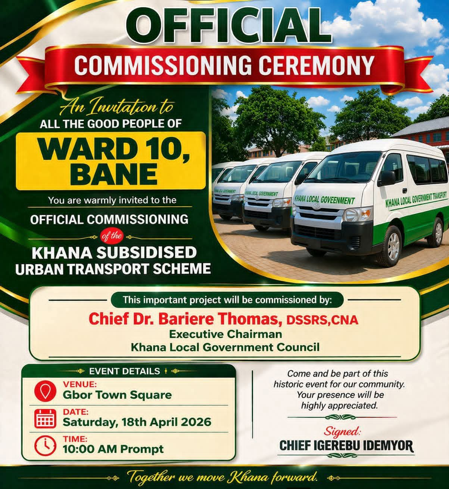
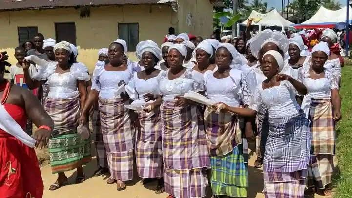
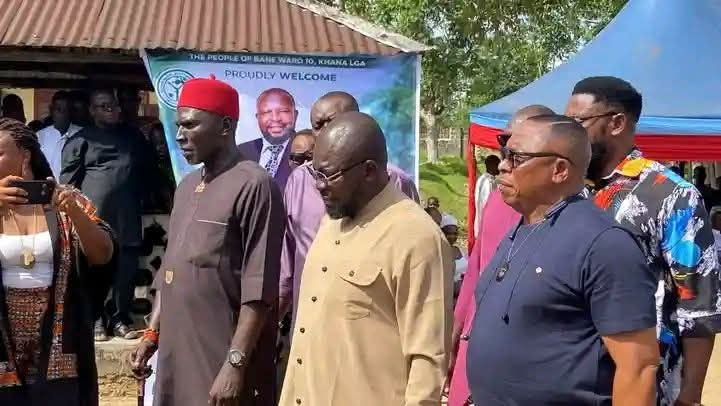
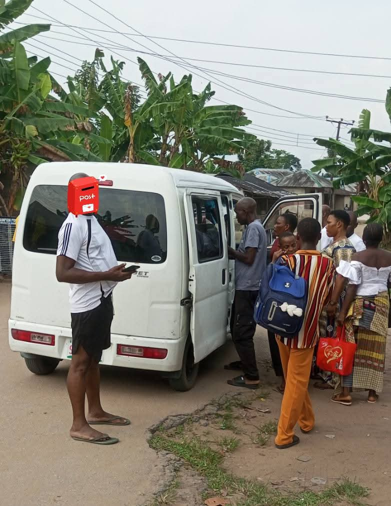
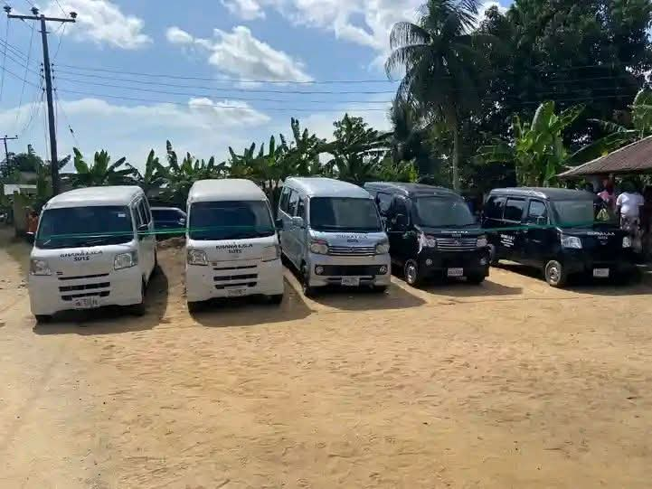

We mobilize our community to ensure that all less privileged individuals, both male and female, in Khana Ogoni, Rivers State, have the resources they need to thrive.
We address critical needs and invest in systemic change through focused initiatives.
Providing essential resources and support systems to less privileged families in Khana Ogoni.
Learn MoreIncreasing quality, capacity, and access to education for children and youth across the region.
Learn MoreImproving life outcomes for young people through skills acquisition and capacity building.
Learn MoreSupporting local infrastructure, health initiatives, and sustainable development projects.
Learn MoreSince our founding, the Alick Idemyor Mene Foundation has worked as a prominent charity in Nigeria to transform the lives of the less privileged in Rivers State. We believe that when you invest in people, regardless of gender, you invest in entire communities.
Our approach to community development in Rivers State centers on providing essential support, building local capacity, and advocating for initiatives that break down systemic barriers in Khana Ogoni.
Chief Igerebu Idemyor is a respected community stakeholder and leader from Gbor village in the Bane community of Khana Local Government Area, Rivers State. Known for his deep commitment to public service and community welfare, he has consistently championed initiatives that uplift the less privileged.
His collaborative efforts with local government have led to significant milestones, such as the Khana Subsidised Urban Transport Scheme, which drastically reduced transportation costs for market women, commuters, and residents along the Bori-Bane route. Through the Alick Idemyor Mene Foundation, Chief Igerebu continues to expand his impact, ensuring that everyone—regardless of gender—has access to the resources and support they need to build a better future.
A glimpse into our community outreach, events, and the impact we are making in Khana Ogoni.





Join our community of supporters, volunteers, and partners working together to build a more equitable world.
The Alick Idemyor Mene Foundation (AIMF) addresses critical needs and invests in systemic change through community support, education initiatives, youth empowerment, and community development projects in Khana Ogoni, Rivers State.
The foundation was founded by Chief Igerebu Idemyor, a respected community stakeholder and leader from Gbor village in the Bane community, known for his deep commitment to public service and community welfare in Rivers State.
You can support our mission by getting involved as a volunteer or making a donation to help fund our grassroots organizations, advocacy efforts, and leadership development programs in Nigeria. You can reach out to us directly via email or WhatsApp.